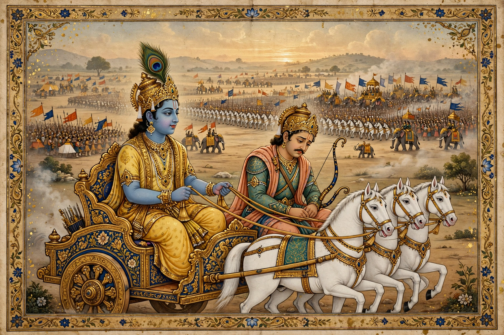

From Wikipedia, the free encyclopedia
| Bhagavad Gita | |
|---|---|
| Religion | Hinduism |
| Form | 700-verse Sanskrit dialogue within the Mahābhārata |
| Speakers | Krishna and the warrior Arjuna |
| Date | last centuries BCE (scholarly range) |

The Bhagavad Gita ("The Song of God"), often called simply the Gita, is a 700-verse Hindu scripture that forms part of the Indian epic Mahābhārata (chapters traditionally numbered 23–40 of the Bhishma Parva). Set on the battlefield of Kurukshetra, it is a dialogue between the Pandava prince Arjuna, paralysed by moral doubt at the prospect of killing his kin, and his charioteer Krishna, an avatar of Vishnu, whose teaching resolves the crisis and culminates in a vision of Krishna's universal form.
The Gita synthesises several paths to liberation (Moksha): the way of action (karma yoga) — performing one's duty without attachment to results ("You have a right to your actions, but never to your actions' fruits"); the way of devotion (bhakti yoga) to God; and the way of knowledge (jñāna yoga). It teaches the immortality of the self (ātman), which weapons cannot cut nor fire burn, and describes the disciplined person of steady wisdom (sthitaprajña). Its doctrine draws on Samkhya categories and Upaniṣadic ideas while reorienting them toward devotion.
The Gita is among the most commented-upon texts in Indian philosophy: Shankara, Rāmānuja and Madhva each wrote commentaries fitting it to their Vedanta schools. In the modern era it was a formative text for Mohandas Gandhi, who called it his "spiritual dictionary"; it was translated into English by Charles Wilkins in 1785 and influenced Thoreau, Emerson, T. S. Eliot and Aldous Huxley. It remains one of the world's most translated and widely read scriptures.